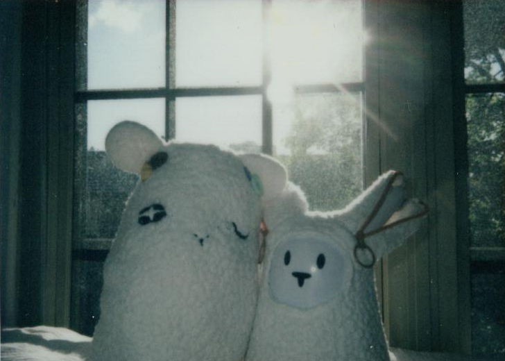
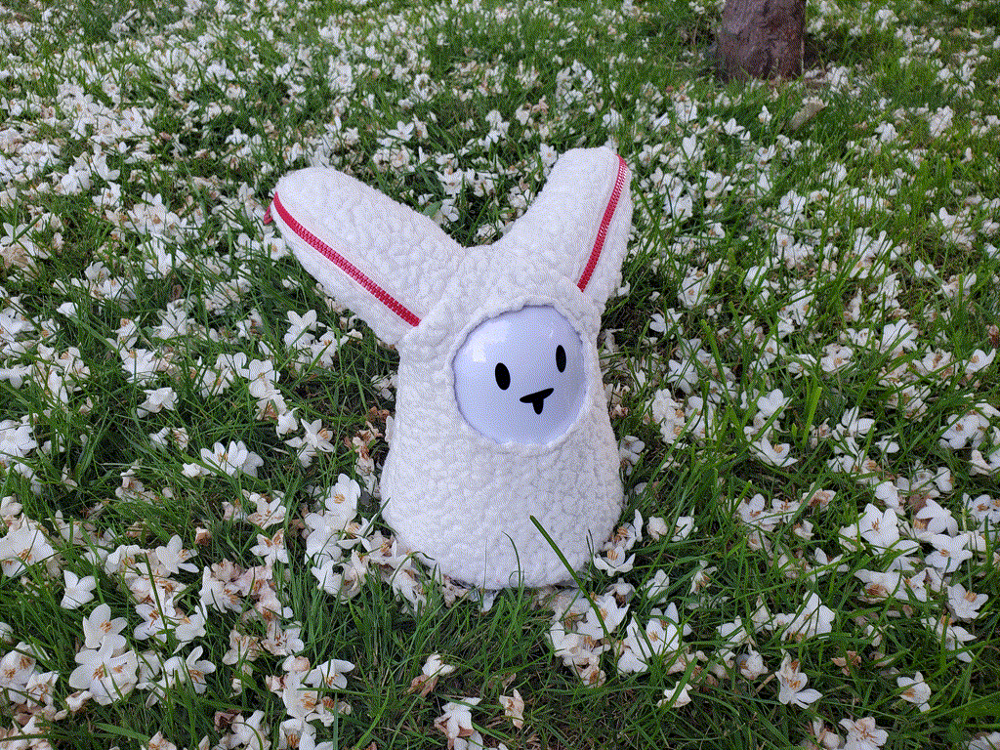
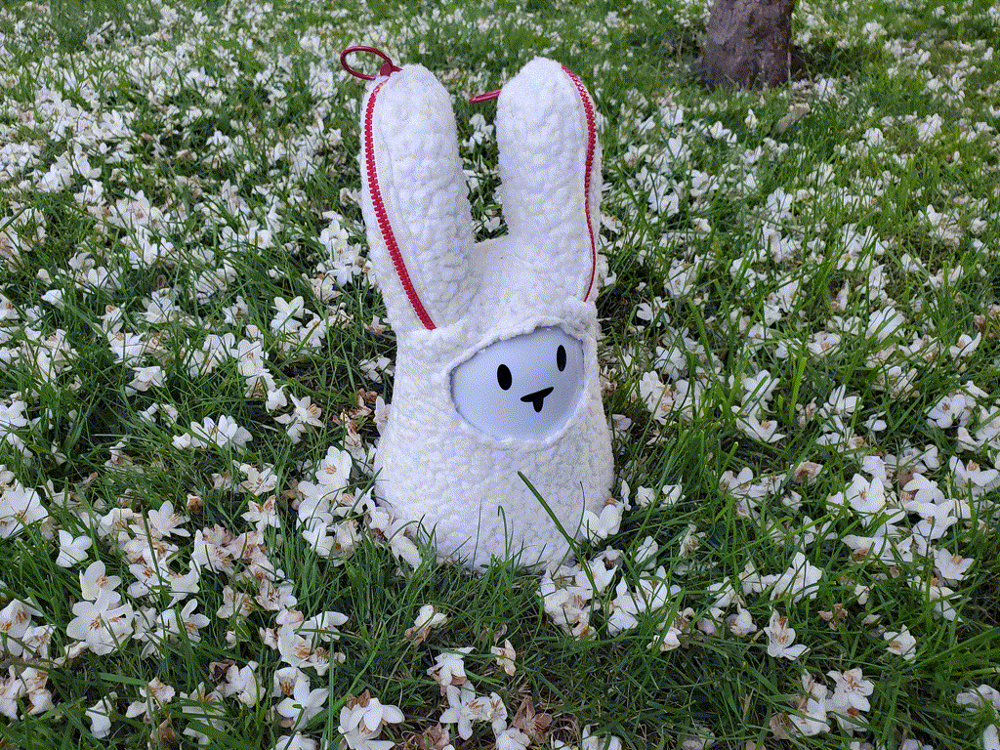
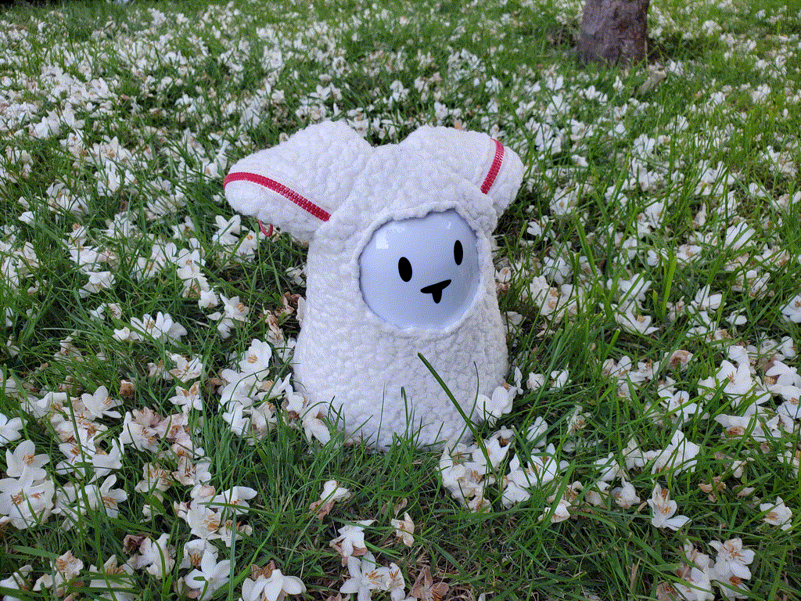
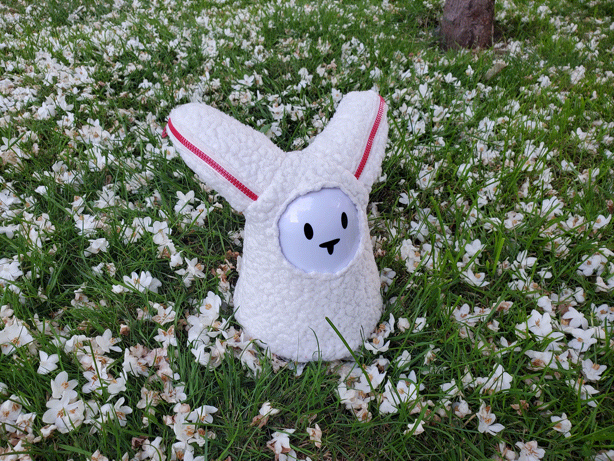
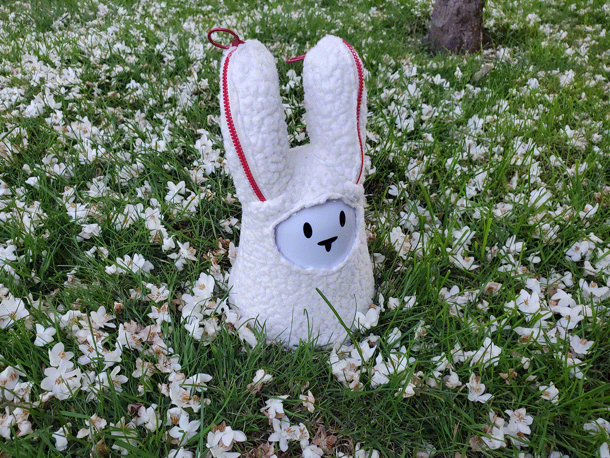
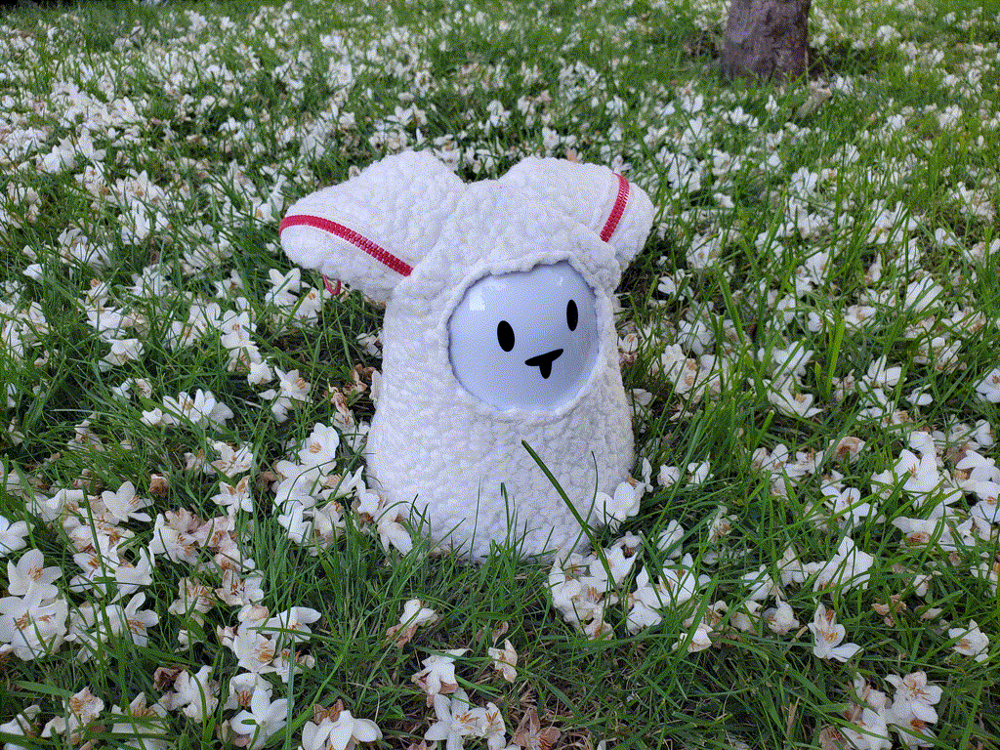

This project was supported in part by funding from the Carnegie Mellon University BXA Intercollege Degree Programs.
Title inspired by book Enchanted Objects by David L. Rose.
I designed and sculpted a pair of ceramic, detachable ears. They are made out of clay and magnets, and have 3D printed connectors to interface with the Nabaztag.
Recording of my interaction.
Demonstration of propensity for play and new forms.
Most service robots have hard-plastic outer surfaces; however, therapeutic robots that provide emotional support through affective touch tend to utilize outer materials that are soft, cushioned, and pleasant to the touch. To explore skin texture as a design consideration for robots, I created a sweater for my Nabaztag and a stuffed animal using a soft material. I designed the patterns for both.

Companion and sweater cut and hand sewn from the same thrifted sweater.

Zippers allow for mobility and detachability of ears. When unzipped, the zippers make a heart shape.

Demonstration of mobility in sweater.

Zipper on the back allows sweater to be taken on and off, and makes it possible for the rabbit to connect to power while the sweater is on.

Zippers allow for mobility and detachability of ears. When unzipped, the zippers make a heart shape.

Demonstration of mobility in sweater.

Zipper on the back allows sweater to be taken on and off, and makes it possible for the rabbit to connect to power while the sweater is on.